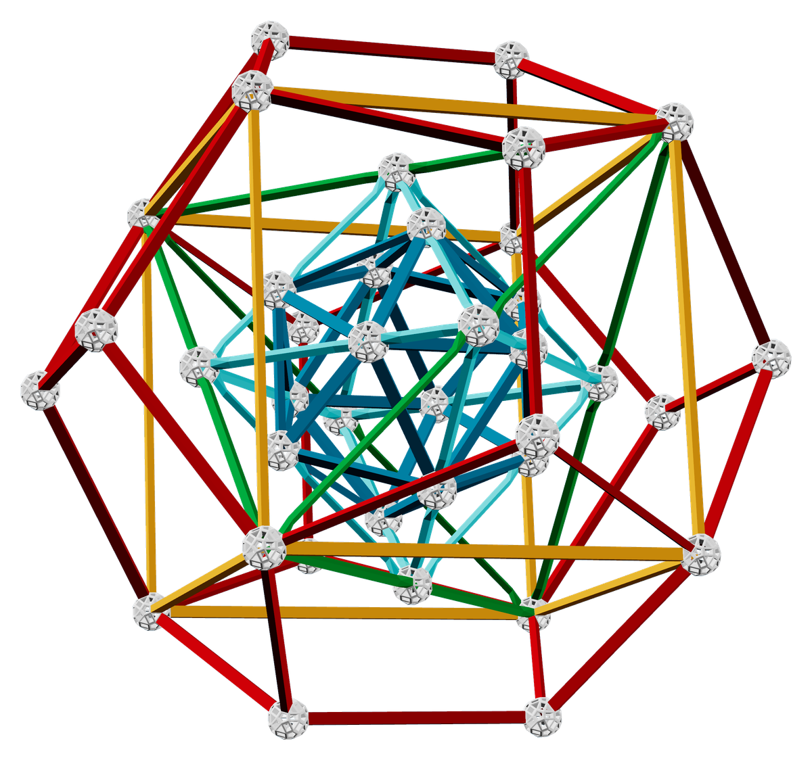
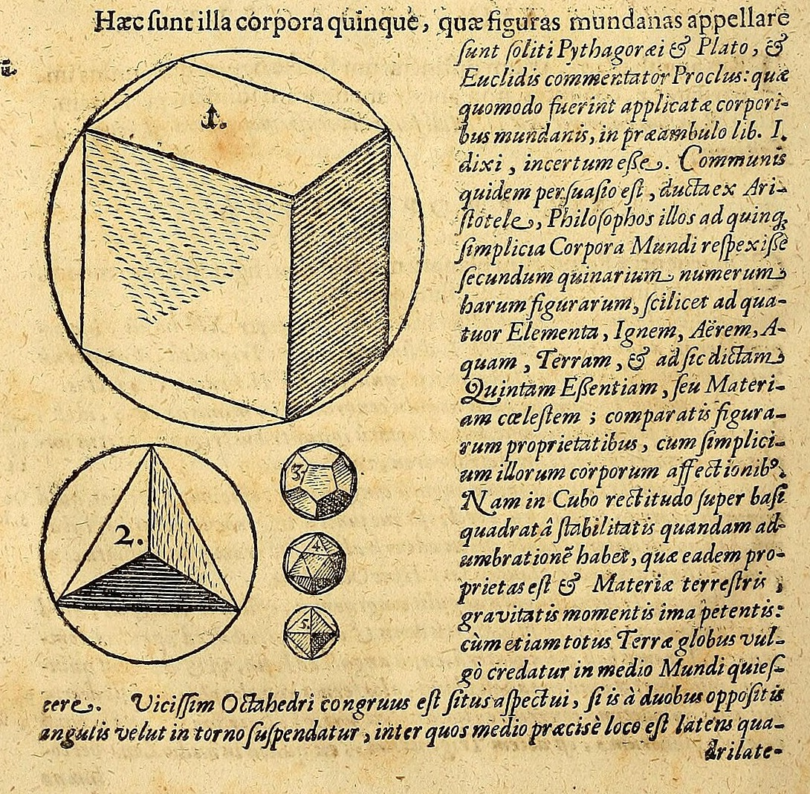
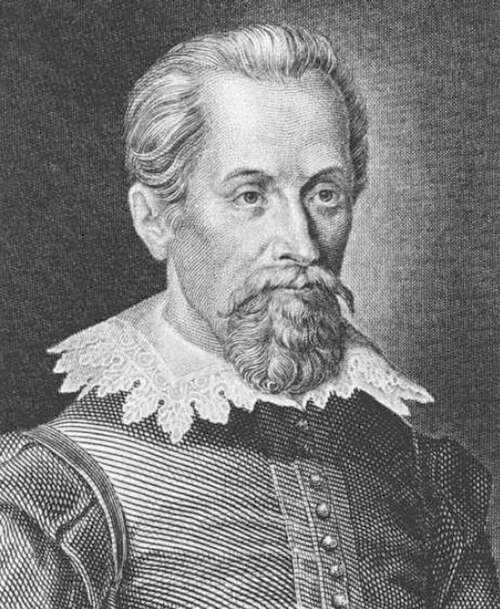
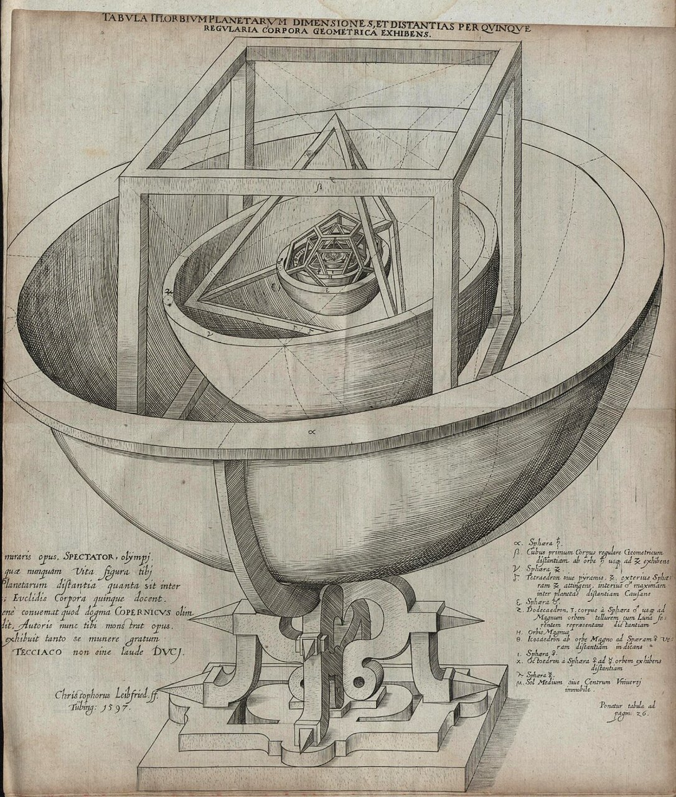
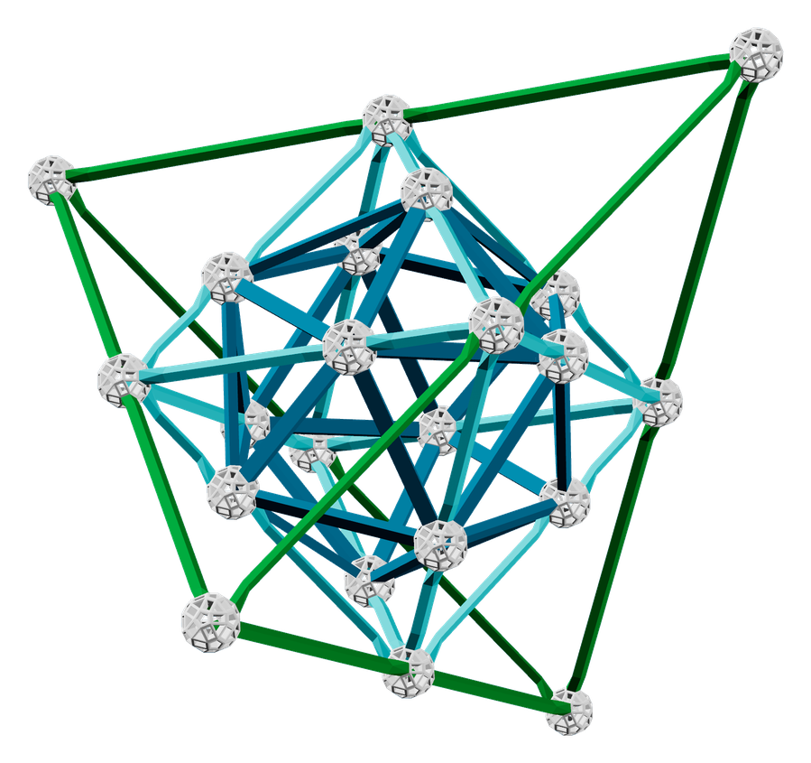
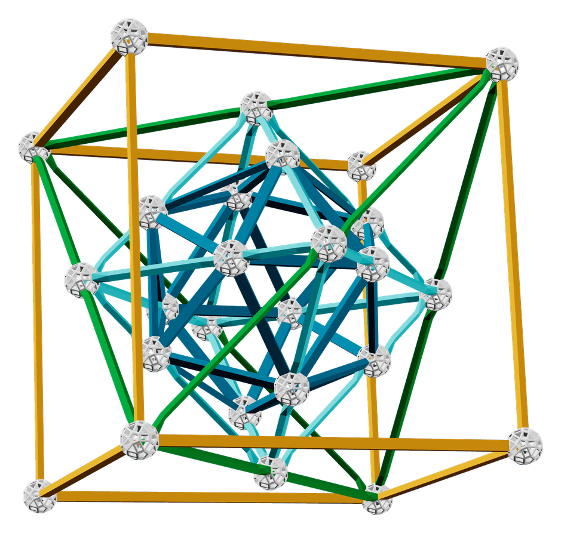

开普勒的宇宙
5 种形状，套出一个宇宙
开普勒的宇宙模型 · 1596 年
这是什么？
一共 5 层，每层都是一种特别的形状
开普勒模型（套娃）
最外层 · 正十二面体
第 4 层 · 立方体
第 3 层 · 正四面体
第 2 层 · 正八面体
最里层 · 正二十面体
今日目标
猜一猜
1火、水、土、气，各是哪一种？
连连看：谁是哪种形状？
开普勒的答案，写在他的书里
开普勒《世界的和谐》· 1619 年
火 = C 正四面体最尖、最小，最会钻
土 = A 立方体方方正正，放哪儿都稳
气 = E 正八面体捏住两个尖就能转，最灵活
水 = B 正二十面体最接近球，最会滚
宇宙 = D 正十二面体12 个面，对应天上 12 个星座

《世界的和谐》第 58 页
开普勒的猜想
2这个套娃，为什么叫开普勒？

400 年前，开普勒想解开一个谜
约翰内斯·开普勒 · 德国天文学家
天上为什么正好有 6 颗行星？
它们为什么隔得这么远？
他觉得，答案藏在形状里。
那时候，人们只知道 6 颗行星
6 颗行星，中间有 5 个空隙
正多面体，正好也是 5 种！
他把 5 种形状一层套一层

开普勒《宇宙的奥秘》· 1596 年
正六面体土星 ↔ 木星
正四面体木星 ↔ 火星
正十二面体火星 ↔ 地球
正二十面体地球 ↔ 金星
正八面体金星 ↔ 水星
每两颗行星之间，夹一种形状
一算：居然差不多对上了！
5种形状塞进去
≈大部分对得上差得不多
?有几处差一点对不上
想一想：差一点点，可以不管吗？
开普勒的宇宙模型，猜对了吗？
怎么才能知道他猜得对不对？——用最准的观测数据来检验！
算了好多年，他发现：轨道是椭圆
第谷认真记了 30 多年的星星位置
开普勒拿到火星的数据，算了好多年
正多面体套成的球，装不下真实的轨道了。
他亲手推翻了自己的猜想
没有藏起来，而是承认：我猜错了。
他找到的椭圆规律，今天发射卫星还在用。

开普勒太空望远镜 · 2009 年发射
所以，它叫「开普勒套娃」
猜错了，可它带开普勒找到了真正的规律。
搭一搭
3一层一层，搭出开普勒套娃
我们搭的，和开普勒画的不一样
1596 年 · 开普勒
- 层和层之间夹着行星球面
- 隔得远，模型很大
- 最外层是立方体
今天 · Zometool
- 没有球面，层层直接卡住
- 套得最紧，模型最小
- 最外层是十二面体
数学家康威用 Zometool 把 5 种形状套到最紧，致敬开普勒。
从里往外，一共 5 层
1二十面体蓝棍 · 课上搭
2八面体青色棍 · 课上搭
3四面体绿棍
4立方体黄棍
5十二面体长红棍
第 1 步：搭一颗红色「刺猬球」
准备：白球 13 · 短红棍 12
第 2 步：连成二十面体
再加：蓝棍 30
第 3 步：青色棍包成八面体
再加：白球 6 · 青色棍 24
第 2 层：八面体！
6 个角，每个角 4 个三角形
继续：再套 3 层

第 3 层 · 四面体绿棍再包一层
第 4 层 · 立方体黄棍搭成方框第 5 层 · 十二面体长红棍盖上最外层
现在你能回答了吗？
1这个套娃，为什么叫开普勒？他用 5 种形状解释行星
2他猜对了吗？没有——轨道是椭圆
3猜错了，怎么办？用数据检验，错了就改
大胆猜，动手验证，错了就改。
今日任务：完成你的开普勒套娃